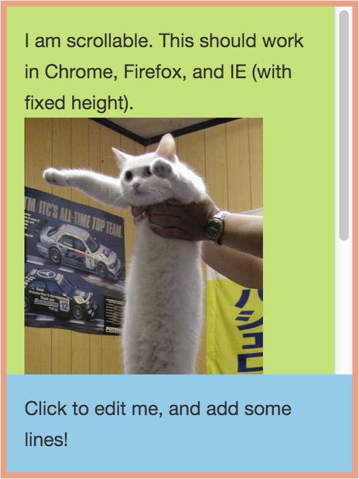
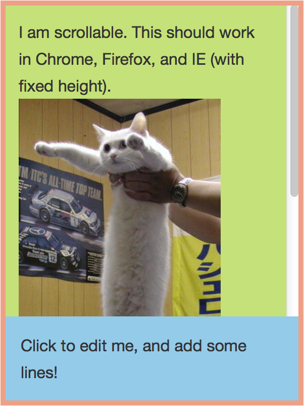

September 2014 Undefined Behaviour When you discover a trick, and then read in the W3C specs that it relies on undefined behaviour, you know you are in for a treat. Like the olden days of the web. What I tried to do shouldn’t be hard, yet it is. I wanted to split a container of fixed but relative height into two parts: a top part that fills up almost the entire container, and is scrollable inside, and a bottom part that resizes based on the content in it. Like this: I am scrollable. This should work in Chrome, Firefox, and IE. Click to edit me, and add some lines! This was how we had designed the sidebar in the Versal course builder. It contained both a scrollable area for lessons and sections, and an dynamically sized area for editing controls: Now, this isn’t terribly hard to do with just Javascript, but it is slightly annoying. You have to manually calculates the heights of the different areas, and keep watching in a smart way for updates. Also, the height of the container wasn’t completely fixed — it stretched the entire page, and so we also had to watch for window resizes. Can we do this in pure CSS? Well, the scrollable area would need an explicit height, otherwise there is no way to determine how high it should be. This height is dependent on the height of the container (which can change) and the height of the flexible area (which can change). As far as I know there is no way to express such a relationship with either normal flow, floats, or absolute positioning. Let’s first simplify the problem, to try to get a feel for it. What if, for example, the bottom area wasn’t flexible. What if we knew its size, say 100px? Then we could wrap the top area in a <div>, which we would stretch to the full height of the container using height: 100%, but in which we would then leave some space for the bottom area using padding-bottom: 100px; box-sizing: border-box. Note that the border-box setting is necessary, as otherwise the padding would be added to the height: 100%, instead of being included in the height. Browser support for border-box is good. All modern browsers up from IE8 support it, and even in earlier browsers if you force them into quirks mode. Finally we would move up the bottom area into the created space using margin-bottom: -100px. Try playing with this code: I am scrollable. This should work in Chrome, Firefox, and IE. Click to edit me, and add some lines! Another solution with an inflexible bottom area, is using the new CSS calc() function. With that function we can do the same trick as above, only by expressing it with math, like this: height: calc(100% - 100px). Then we don’t need the wrapping <div>. I am scrollable. This should work in Chrome, Firefox, and IE. Click to edit me, and add some lines! Now, why can’t we do a similar trick with a flexible bottom area? Well, in the previous examples the height of the top area depended on the height of the container, and some variable. You could also make it dependent on its content, by just adding margins and paddings. But you cannot do both, especially not if you want to use the size of its sibling. That would open up the door to circular dependencies, and make the layout algorithms of browsers needlessly complicated. If you are an experienced web developer, at this point you might think, but what about using tables? After all, the table layout algorithms are weird. And indeed, with some tinkering, you'll figure out that the following code works. However, as it turns out, only in Google Chrome. If you're using another browser now, believe me, it does work in Chrome. I am scrollable. This should work in Chrome. Click to edit me, and add some lines! In this example, we give turned the container into a table, and gave it some height. The table first contains a row with a table cell with height: 100%, and in there our top area, also with height: 100%. Then there is another table row, with a table cell, with our bottom area. The idea is that the first table cell stretches as far as possible, but leaving some room for the second cell, that also needs to fit in the table. After I discovered that, I immediately went searching the W3C specifications, to figure out how this is works. Reading the specs is important. Otherwise it’s like discovering that things fall, but not learning about the mathematical principles of gravity. We need to understand the mathematical principles of the table layout algorithm. As it turns out, the CSS 2.1 specs say something about this: “CSS 2.1 does not define how the height of table cells and table rows is calculated when their height is specified using percentage values.” So it’s completely coincidental that my trick happened to work in Chrome! And, in fact, it doesn’t work in other browsers, because they implement different behaviour. Now the fun part starts. Can we find a way to make the desired behaviour work across all major browsers, knowing they can do whatever they want with percentage heights in table cells? First, lets fix the CSS for Firefox, while keeping it working in Chrome. Earlier we have set the top area to stretch to the height of the first table cell, by using height: 100%. But there is another way to stretch vertically: using position: absolute; top: 0; bottom: 0. This triggers a different layout algorithm, which happens to work in both Chrome and Firefox. I am scrollable. This should work in Chrome and Firefox. Click to edit me, and add some lines! Then Internet Explorer. Sadly, they use yet another algorithm, and the none of the tricks so far work. While the first table cell stretches correctly, the height that the top area gets ends up being zero. This happens both when we use height: 100% or position: absolute. It seems to use the height of the content of the table cell, not the actual rendered height of the table cell. So alas, I couldn’t find a way to make our desired behaviour work in IE. However, we can use the next best thing — setting a fixed height on the bottom area — combined with the better solution that works in Chrome and Firefox. Since the height that the top area gets in IE is the same as the content height, we can add another <div> to the first table cell that we give a fixed height using calc(), as we saw before. This <div> will be considered content as it does not depend on the height of the table cell, and thus the top area will stretch to this value. This way we can set a reasonable fallback that works in IE, by using some maximum height that the bottom area will never exceed. I am scrollable. This should work in Chrome, Firefox, and IE (with fixed height). Click to edit me, and add some lines! Thus, based on the different browser implementations, we have found a solution that works perfectly in Chrome and Firefox, and falls back to a reasonable alternative in Internet Explorer.  Google Chrome (flexible)  Mozilla Firefox (flexible) Microsoft Internet Explorer (fixed) Not bad for undefined behaviour. * * * Update: Thomas ten Cate made me aware of the fact that the new CSS Flexbox Layout has excellent browser support now. This makes it easy to solve the problem in a fully defined way! I am scrollable. This should work in Chrome, Firefox, and IE! Click to edit me, and add some lines!